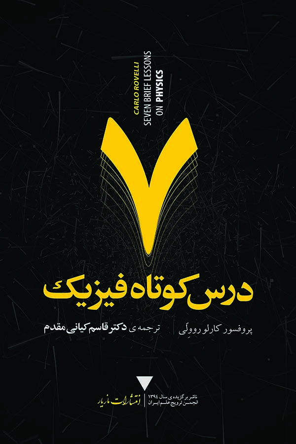

هفت درس کوتاه فیزیک

| عنوان | هفت درس کوتاه فیزیک |
|---|---|
| نویسنده | کارلو روولی |
| مترجم | قاسم کیانی مقدم |
| شابک | ۹۷۸-۶۰۰-۶۰۴۳-۵۹-۳ |
| ناشر | انتشارات مازیار |
| سال نشر | ۱۳۹۵ |
در بارهی این کتاب
هفت درس کوتاه فیزیک کتاب پرفروش بینالمللی است که زیبایی فیزیک مدرن و لذتهای اکتشاف علمی را به خوانندگان عرضه میدارد. کارلو روولی در این کتاب با زبانی ساده و بیانی زیبا مباحث گوناگون فیزیک مدرن را بازگو میکند: نسبیت عام اینشتین، مکانیک کوانتومی، ذرات بنیادین، گرانش، سیاهچالهها، معماری پیچیدهی گیتی، و نقشی که انسانها در این دنیای غریب و شگفتانگیز ایفا میکنند. او ما را به آخرین مرزهای دانش میبرد—به ظریفترین جزئیات بافتار فضا، به سرچشمهی کیهان، و به ساز و کار درونی ذهنمان. اینجا، در خط مقدم چیزهایی که میدانیم، در تماس با اقیانوس ناشناختهها، رمز و راز و زیبایی دنیا چشمها را خیره میکند.